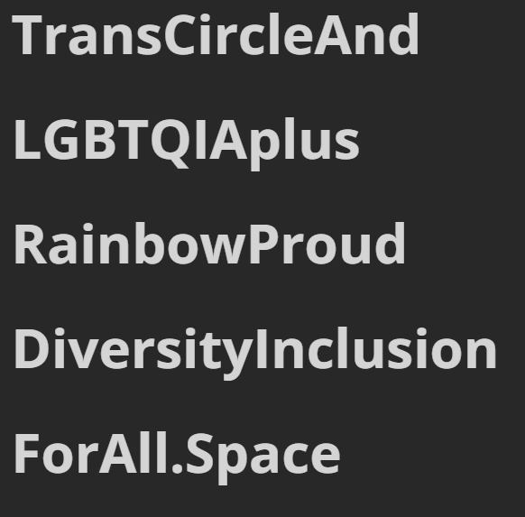

依菲雅✨𝑬𝒑𝒉𝒆𝒊𝒂🏳️⚧️
@nyaepheia
RT @TransCircleOrg: 【非正式发布】 我们为我们的项目配备了短·链·接，使用下面的链接即可跳转主站：
https://t.co/S66j8B9UHQ
made by @sheepahead

TransCircle 跨环
@TransCircleOrg
【非正式发布】 我们为我们的项目配备了短·链·接，使用下面的链接即可跳转主站：
https://t.co/S66j8B9UHQ
made by @sheepahead https://t.co/grCMssRzc8